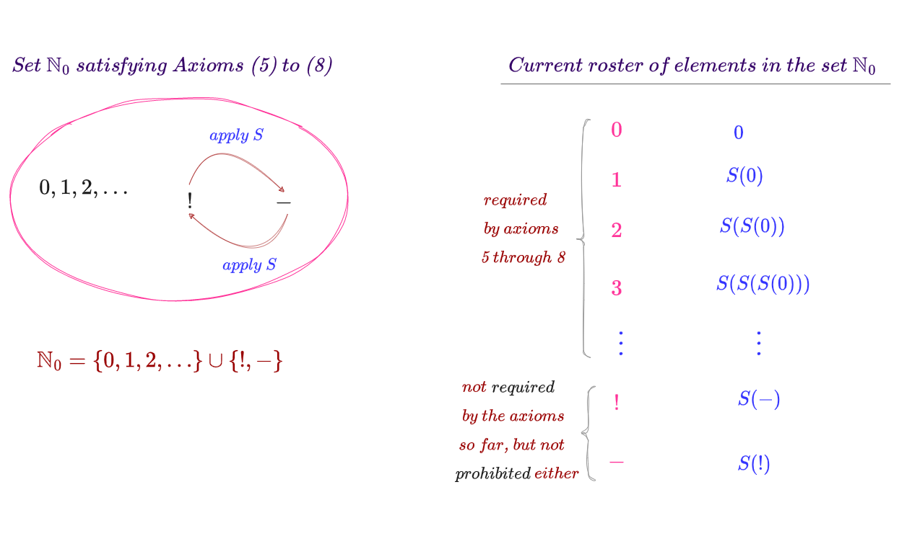
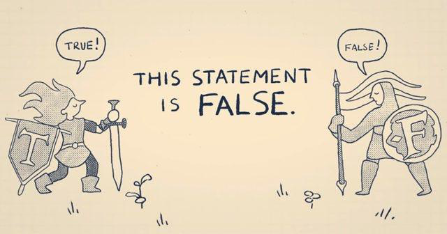
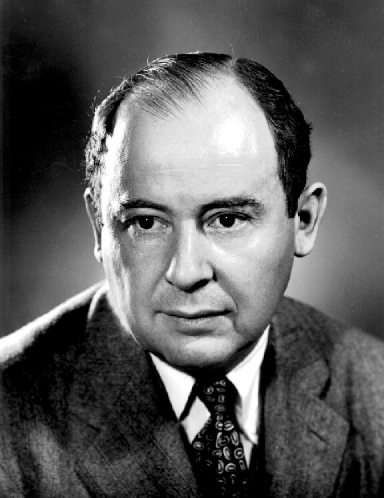
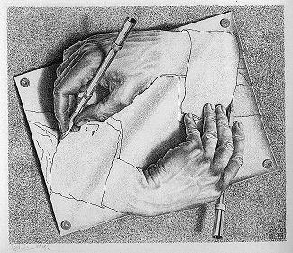

The Albertina university, Königsberg: host city of the 1930 conference.
UNPROVABLE
by Lanchenba MutumHilbert's dream, Gödel's bombshell, Goodstein's runaway numbers and a court that cannot judge itself.
EXHIBIT A
The Königsberg conference, 1930
Let me break a rule, mathematics can't prove everything…Imagine gathering of world renowned scientists (David hilbert being the most prominent among them) along with a group of other scholars at the königsberg conference in 1930
David Hilbert
What were they doing?in truth,mathematics had reached such an advanced stage that it began to yield certain logical paradoxes. Consequently, Hilbert decided to use the conference to announce what became known as the “Hilbert program” simply put, his vision centered on three main pillars:
IFormalizationStripping mathematics down to pure symbols.
IIConsistencyEnsuring that the system is free of contradictions, it should be impossible to prove both 1=1 and 1=0 simultaneously
IIICompletenessEstablishing a set of axioms sufficient to derive every possible mathematical truth, every mathematical statement must be either provably true or provably falseDENIED · 1930
Formalization: Stripping mathematics down to pure symbols. for example, instead of writing 1+1=2 Hilbert would represent it as follows:
the number 1 is denoted as\(s(0)\)
the number 2 is denoted as\(s(s(0))\)
the equation becomes\(s(0)+s(0)=s(s(0))\)

The natural numbers built from 0 and the successor s, one symbol at a time.
It sounds perfectly logical right?
EXHIBIT B
A young man raises his hand
But what if I told you there was a young man at that conference who threw all this “logic” out the window?that man was Kurt Gödel. He calmly raised his hand and essentially said:
Kurt Gödel
Well, I have found a mathematical statement that is true, yet unprovable.— Kurt Gödel, Königsberg, 1930
He then presented his first incompleteness theorem,which was by every definition of the word a bombshell.

Did this image make you feel like your mind has gone blank? Anyways,this image is actually the main concept of Gödel’s incompleteness theorem.EXHIBIT C
The first incompleteness theorem
The first incompleteness theorem states that no consistent system of axioms whose theorems can be listed by an effective procedure (i.e. an algorithm) is capable of proving all truths about the arithmetic of natural numbers. For any such consistent formal system, there will always be statements about natural numbers that are true, but that are unprovable within the system. Equivalently, there will always be statements about natural numbers that are false, but that cannot be proved false within the system.1
Let me take your hand and lead you on a journey to simplify these complex concepts (I'll make you love mathematics,no matter what)
A consistent system is one that contains no contradictions. Meanwhile, an undecidable statement is a mathematical proposition that is true, yet the rules of the system are insufficient to prove it. In Gödel theorem, he states that any consistent mathematical system is not necessarily complete. This means that for a certain mathematical statement (let's call it G), the system can neither prove that (G) is true nor prove its negation. Simply put, Gödel represented the mathematical system with a symbol(let's call it F) and a statement (G) then constructed a mathematical statement asserting that (F) can't prove (G)
If the statement is trueit means it actually cannot be proven (hence, the system is incomplete)
If the statement is falseit would mean (F) can prove (G) but it would lack an actual consistent proof leading to a contradiction.
Reflecting on this, there are two possibilities: 1/the system is Inconsistent, or 2/the system is incomplete
1 Source: Wikipedia
MATHEMATICS CHOSE TO BE INCOMPLETE RATHER THAN BEING INCONSISTENT
TRUTH > PROVABILITY
Figure 1. Before Gödel, all true statements in basic arithmetic were thought to be provable. Gödel showed that this view was wrong and that there are statements that are true but not provable.EXHIBIT D
Goodstein's theorem
Well,is Gödel theorem 100% correct?in fact,yeah
Do I have proof?I have many,but let's highlight goodstein's theorem. Pick a number - a positive integer - expressed in simple base notation. Then repeatedly - recursively - perform the following two operations:
① Increment the basebase 2 → base 3 → base 4 …
② Subtract onefrom the number
What will happen? The answer is the number eventually converges to 0. Most people incorrectly guess the sequence goes to infinity.
number = 4 and base = 2,
base 2
[1, 0, 0]
4
start
base 3
[1, 1]
4
1 iteration
base 4
[1, 0]
4
2 iterations
base 5
[3]
3
3 iterations
base 6
[2]
2
4 iterations
base 7
[1]
1
5 iterations
base 8
[0]
0
6 iterations
Each box: the digits in that base, and the value they stand for.
Now that you have examined simple base notation(congratulations), you are ready to tackle Goodstein's Sequence
$$266 = 2^{8}+2^{3}+2 = 2^{2^{2+1}}+2^{2+1}+2$$
If base two is recursively incremented to base three, the right side of the expression becomes
In fact,the sequence growing before us is one of the strongest examples of Gödel’s incompleteness theorem. We know that it eventually terminates at zero using set theory and the concept of infinity. However, we can't prove this using the standard rules of arithmetic(peano arithmetic which we learn at school), because the proof requires an induction that exceeds the capacity of that system.
Goodstein sequence of 6, first 100 values (computed exactly for this edition). It does reach 0 in the end, but only after an unimaginably long climb.
The trajectory of the goodstein's sequence for n=6 starts with a deceptive simplicity, but within just 100 iterations,the values escalate to an astronomical 10¹⁰, this steep, near-vertical incline visually represents the unbounded nature of the sequence when viewed through the lens of standard arithmetic.
EXHIBIT E
The second incompleteness theorem
To be honest, we are not finished with our story yet. After Gödel presented his bombshell(the first incompleteness theorem) and while scientists were trying to comprehend it, there was a brilliant mind who had already understood it. When one of the scientists returned from the conference and decided to work on the conclusions of the first theorem and analyze them, he reached an idea that radiates more heat than its predecessor, which is that this theorem is true and that the system cannot prove its Consistency by itself.2

John von Neumann
Guess the surprise, dear reader? After this, a scientist sent his discovery to Gödel, Gödel sent his reply to him saying:
thank you for your letter, I have already discovered this and sent the research paper for publication weeks ago— Gödel's reply
Do you want to know who this scientist is? He's John Von Neumann. And let me make the matter clear to you with a simple example: Imagine that we have a powerful charger,
The first theoremThe existence of a powerful charger doesn't mean that it can charge all devices
The second theoremAnd the existence of a powerful charger doesn't mean that it's not faulty
Let's suppose we are standing in a courtroom now with judges, if we asked the judges: Is your judgement fair?, whatever their answer is, it's not believable because the court can't judge itself, whether it's fair or unjust, unless we bring another different court to judge it. Consequently, Gödel proved that the system can't prove its consistency by itself.
2 Source: Incompleteness: the proof and paradox of Kurt Gödel (Book) by: Rebecca Goldstein
EXHIBIT F
The unprovability of consistency
Gödel's first theorem mathematically states that:\(PA \vdash (\mathrm{con}(PA) \rightarrow G)\)
And if we assume that the system was able to prove its own consistency, this means that we have a proof for:\(\mathrm{con}(PA)\)
∴ Consequently, we now have a proof for (G)\(PA \vdash G\)
Here the contradiction appears, as the first theorem proved that (G) can't be proven:\(PA \nvdash G\)
So The equation will be:\(PA \nvdash \mathrm{con}(PA)\)
And that's simply was the incompleteness theorem.

“Either mathematics is too big for the human mind or the human mind is more than a machine”~ Kurt Gödel
Photographs: David Hilbert (postcard, c. 1912), Kurt Gödel as a student (1925), John von Neumann (Los Alamos National Laboratory), the Albertina, Königsberg (colour postcard). Via Wikimedia Commons; public domain / attribution as listed there. Drawing Hands (1948) by M. C. Escher. Diagrams and the Goodstein chart drawn for this edition.
 David Hilbert
David Hilbert